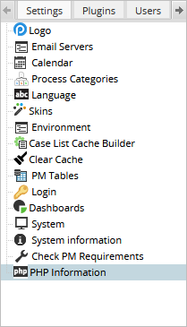
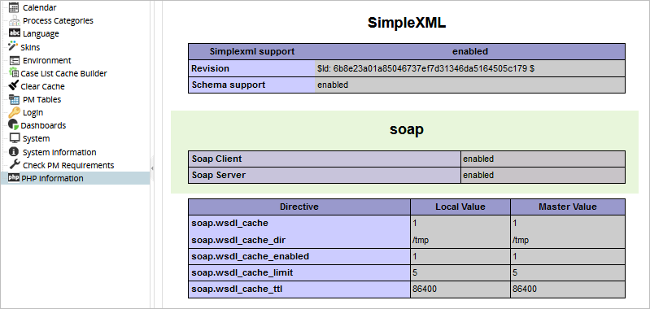

- Overview
- Programming WSDL Web Services
- Using External WSDL Web Services
- Logging In with ProcessMaker's WSDL Web Services
- Web Services Response Objects
- Web Services Error Numbers
- Web Services Security
- WSDL Web Services Functions
- userList()
- groupList()
- departmentList()
- roleList()
- createUser()
- createGroup()
- createDepartment()
- assignUserToGroup()
- assignUserToDepartment()
- processList()
- taskList()
- taskCase()
- caseList()
- unassignedCaseList()
- getCaseInfo()
- newCase()
- newCaseImpersonate()
- reassignCase()
- routeCase()
- claimCase()
- getVariables()
- sendVariables()
- triggerList()
- executeTrigger()
- sendMessage()
- systemInformation()
- inputDocumentList()
- inputDocumentProcessList()
- outputDocumentList()
- removeDocument()
- Uploading and Downloading Files
- Uploading Files
- upload POST variables
- Using PHP's cURL Library to Upload
- Uploading Input Documents
- Uploading Attached Files
- Overwriting Files or Adding New Versions
- Downloading Files
- Examples
Overview
ProcessMaker's WSDL Web Services provide a programming interface to remotely control and integrate ProcessMaker with external systems using SOA compliant protocols. WSDL Web Services allow ProcessMaker's functionality to be accessed remotely over the internet using the W3C's Simple Object Access Protocol (SOAP) 1.2 and Web Services Description Language (WSDL) 1.1. Unlike Simple Trigger Web Services, which can only be called inside ProcessMaker triggers in PHP, WSDL web services can be called both in triggers and in external applications and scripts.
WSDL web services allow external programs to remotely retrieve lists of users, groups and roles, start and route cases and send notifications. These web services can be very useful when creating scripts to automate tasks in your server and creating web pages that create and derive ProcessMaker cases.
ProcessMaker is transitioning to REST, but web services still work in ProcessMaker 3.x.
Programming WSDL Web Services
ProcessMaker WSDL web services functions can be called by any language that has SOAP and WSDL libraries such as PHP, Java, Python, Perl, Ruby and the .NET languages like VB.NET and C#. Examples are provided using PHP, but they should work with other languages with slight modifications accounting for their particular manner of making function calls and handling objects.
The SOAP library for PHP implements both the SOAP 1.2 and WSDL 1.1 specifications. To use SOAP in a PHP script, PHP should be configured with the option --enable-soap. The ProcessMaker Windows Installer enables this option by default, but it may not be enabled in Linux/UNIX. To verify whether its enabled, go to Admin > Settings > PHP Information:

Look for a section labeled soap, which is usually after the SimpleXML section, and verify that SOAP Client is "enabled" to use external web services and SOAP Server is "enabled" to offer ProcessMaker web services, as shown in the image below.

If unable to use web services, the problem may be that PHP is caching your WSDL calls for up to 24 hours. In this case, disable the WSDL cache in your PHP script with the line:
When initially creating scripts that use web services, it is a good idea to display all errors to help debug the script:
Later, when your scripts are used in production, it is a good idea to turn off error reporting for security reasons.
Using External WSDL Web Services
External WSDL web services from other applications can be called from inside a ProcessMaker trigger with the SOAP library. For this purpose, consider the following steps:
1. Find out how to call the web service by examining their WSDL page, which is in XML format.
2. Create the file getfunctions.php in the workflow/public_html directory with the following code. This code displays a list of the available functions.
$url = "WSDL_WEB_SERVER_URL";
$client = new SoapClient($url);
foreach ($client->__getFunctions() as $func) {
print "$func <br>\n";
}
?>
3. Redirect your web browser to http://
4. If using Apache, modify the .htaccess file to allow running other PHP files.
5. Add a trigger that creates a SoapClient object and uses it to call web services functions.
$function_name = "FUNCTION_NAME"
$arguments = ['param1' => @@VALUE1,...];
$client = new SoapClient($url);
$result = $client->__SoapCall($function_name, $arguments);
@@RESULT_VARIABLE = $result->result_name->param_name;
Logging In with ProcessMaker's WSDL Web Services
The WSDL web services can be called by an external program or by ProcessMaker triggers. First create a SOAP client object. For instance, if accessing ProcessMaker installed at http://myserver.com in the "workflow" workspace, then use:
Note: If your ProcessMaker instance includes SSL certificates, the SOAP Client requires to send additional options as parameters. For more information about it, see SSL Certificates in the SOAP Client.
Web services are handled through the SOAP client object, which can make function calls to ProcessMaker using the __SoapCall() method. It has two parameters:
- The name of the ProcessMaker web services function as a string.
- An array containing an associative array, which contains the parameters to pass to the web services function. Input each parameter name as a key with its value. (Remember that parameter names are case sensitive.)
To find out what functions to pass through __SoapCall() and its parameter array, see the function list below or examine the XML listing of functions in http://<IP-ADDRESS>/sys<WORKSPACE>/<LANGUAGE>/neoclassic/services/wsdl2
login() Web Service
After instantiating a SOAP client object, then use the login() function to start a web services session in ProcessMaker:
The userid is the name of the user and password is the user's password. Note that the function parameters for web service functions have to be passed as an associative array within an array.
For instance, if the user ID is 'andy' and the password is 'foobar', then log in using the following script in PHP:
Using Hashed Passwords from the Database
The password can also be an MD5 or SHA256 hash, which is how the passwords are stored in the ProcessMaker database.
The hashed passwords can be found by entering MySQL and examining the field wf_<WORKSPACE>.RBAC_USERS.USR_PASSWORD in your installation of ProcessMaker. For instance if using the "workflow" workspace (which is the default), enter the following commands in the command line:
In the above example, the password is 32 characters long which is the length of an MD5 hash. Most installations of MySQL 5.6 and later are configured to use SHA256 instead MD5, so the hashes will be 64 characters long. The encrypted passwords need to identify that they are using encryption when passed to the login() function. Prepend the string "md5:" to the front of each password, so the password for "andy" in the case above would be "md5:10b28c9abf3a62e9dcb63da27a7186d8". Even if using SHA256, prepending "MD5:" will work. For example:
If the passwords of the ProcessMaker users are already known, then PHP's md5() function can be used to create the MD5 hash for their passwords. For instance, if the user ID is 'andy' and the password is 'foobar':
Likewise, if MySQL stores the passwords as SHA256 hashes, then use PHP's hash('sha256','password') function. For example:
Looking up Hashed Password
If passwords might change, it is a good idea to have the script lookup the password hash directly from the MySQL database right before calling the login() web service. If using web services inside a ProcessMaker trigger, then the password for a user can be looked up with the executeQuery() function. For instance, the following code would look up the password for the user "andy":
$user = "andy";
$result = executeQuery("SELECT USR_PASSWORD FROM RBAC_USERS WHERE USR_USERNAME='$user'");
$pass = "md5:" . $result[1]['USR_PASSWORD'];
$params = array(array('userid'=>$user, 'password'=>$pass));
$result = $client->__SoapCall('login', $params);
Note: If using a workspace that has been upgraded from version 2, then the workspace information will be stored in 3 database, rather than 1. The hashed passwords can be found in the rb_{workspace}.USERS.USR_PASSWORD field. To looking up the password with executeQuery() the query would be:
If using web services from an external script, then use the MySQL functions provided by your programming language to look up the password. For example, if programming in PHP, use the mysql_query() function. The MD5 password for the user "andy" is queried on a MySQL server at 192.168.1.100, running on port 3306, which is the default port for MySQL.
die("Error connecting to MySQL database.\n");
mysql_select_db('wf_workflow');
$user = "andy";
$result = mysql_query("SELECT USR_PASSWORD FROM RBAC_USERS WHERE USR_USERNAME='$user'") or
die("Error: Unable to query the RBAC_USER table.\n");
$record = mysql_fetch_array($result, MYSQL_ASSOC);
if (!$record) {
die("Error: Unable to find password for '$user' in the RBAC_USER table.\n");
}
$client = new SoapClient('http://myserver.com/sysworkflow/en/neoclassic/services/wsdl2');
$pass = $record['USR_PASSWORD'];
$params = array(array('userid'=>$user, 'password'=>$pass));
$result = $client->__SoapCall('login', $params);
Note: If using a workspace that has been upgraded from version 2, so the password hash is stored in the tb_{workspace}.USERS.USR_PASSWORD field, then use a database query like the following:
$user = "andy";
$result = mysql_query("SELECT USR_PASSWORD FROM USERS WHERE USR_USERNAME='$user'");
loginResponse object
The login() function returns a loginResponse object, which contains the following data members:
integer status_code:Zero if a successful login, or a non-zero error number if unsuccessful.string message:If a successful login, the session ID. If an unsuccessful login, an error message.string version:The version number of ProcessMaker's web services, which is currently "2.0". This number can be checked to verify that the web services haven't changed when upgrading ProcessMaker.string timestamp:The datetime when the session began.
It is a good idea to check whether a login was successful by checking the status_code of the loginResponse object:
$sessionId = $result->message;
else
print "Unable to connect to ProcessMaker.\nError Number: $result->status_code\n" .
"Error Message: $result->message\n";
Once logged in, use web services to remotely control ProcessMaker.
LDAP and Active Directory Users
If logging in as a user who was imported from LDAP or Active Directory, then MD5 passwords can NOT be used. Imported users can only log in using using their real passwords (except if the Authentication Source for those users is switched from LDAP or AD to MySQL).
To use LDAP or Active Directory users in your scripts whose passwords might change, it is recommended to create a dummy user whose password will not change to do all your web services work. To send in variables and upload input documents to the case, then make the dummy user a Process Supervisor and give their rights to update specific Dynaforms and input documents. For the dummy user to be able start cases, assign the dummy user to the initial task(s) in the process.
To route cases, then add the dummy user to the list of ad hoc users for tasks. Then, reassign the case to the dummy user and route on the case. For ProcessMaker to show that a real user worked on the case, write a trigger to set the real user in the database after the task has been closed. For example, create the following trigger in ProcessMaker:
//case variables set with sendVariables() web service:
$lastIndex = @@lastIndex;
$realUserId = @@realUserId;
executeQuery("UPDATE APP_DELEGATION SET USR_UID='$realUserId' WHERE APP_UID='$caseId' AND DEL_INDEX=$lastIndex");
In the web services script, first route the case to the next task in the process with routeCase(), then send in the index number for the previous task and the real user's unique ID with sendVariables(). Then, call executeTrigger() to fire the above trigger to change the user in the database. Remember to only change the user in this way for closed tasks in the case.
Web Services Response Objects
The ProcessMaker Web Services functions generally return two types of response objects, either a pmResponse object or an object containing an object containing an array of objects.
1. The ProcessMaker web services functions that do not return lists return a pmResponse object. The object has the following structure:
Where:
integer status_code:If the function was executed successfully this parameter is 0, otherwise it is a non-zero error number.string message:The returned function message. If an error, then it will return an error message.string time_stamp:The date and time when the function was performed.
It is recommended to always check the status_code to verify that a web services function executed correctly.
2. Web services functions that return lists such as, userList() and processList(), will return an object containing an object which contains an array of objects. Here is the structure of the processListResponse object returned by processList():
Where:
string guid:Process ID.string name:Process name.
All the web services that return lists use the same basic object structure, although the names of the objects change. The innermost objects always contain the guid and name member variables, so the data can be accessed in basically the same way for all the web services functions.
For each function, check the provided example to find out the names of the objects and see how to access their data. It is also recommended to use PHP's var_dump() function to investigate the structure of web services objects.
When there is an error obtaining a list, the object returned has a slightly different structure. It contains the same objects, but does not contain an array:
Where:
string guid:The error number.string name:The error message.
When using a web services list function, it is recommended to use PHP's is_array() function to check the return object to verify whether it contains an array. If it does not contain an array, an error has occurred.
Web Services Error Numbers
After calling a web services function, it is a good idea to check its return object to verify that the function executed correctly. The guid contains the error number and the name contains the error message, but these member variables have to be accessed differently depending on the type of return object. To see how to check for the error number, see the provided examples for the different web services functions.
| Error Number | Function | Status Message |
|---|---|---|
| 0 | all | Command executed successfully |
| 1 | login | User does not have access to system |
| 2 | many functions | Insufficient privileges to execute this function |
| 3 | login assignUserToGroup |
User not registered in the system |
| 4 | login | Wrong password |
| 5 | login | user is inactive |
| 6 | createUser | Invalid role |
| 7 | createUser | User ID: $userId already exists! |
| 8 | assignUserToGroup | User exists in the group |
| 9 | assignUserToGroup | Group not registered in the system |
| 10 | newCase | Array of variables is empty |
| 11 | newCase | Invalid process $processId |
| 12 | newCase | No starting task defined |
| 13 | newCase | Multiple starting tasks |
| 14 | newCase | Task invalid or the user is not assigned to the task |
| 15 | derivateCase | The task is defined for Manual assignment |
| 16 | getCaseInfo | Case $caseNumber doesn't exist |
| 17 | routeCase executeTrigger |
This case is assigned to another user |
| 18 | routeCase executeTrigger sendVariables |
This delegation is already closed or does not exist |
| 19 | routeCase executeTrigger |
This case is in status $caseType |
| 20 | routeCase | Please specify the delegation index |
| 21 | routeCase | Can not route a case with Manual Assignment using web services |
| 22 | routeCase | Task does not have a routing rule; check process definition |
| 23 | sendVariables | The variable's parameter length is zero |
| 24 | sendVariables | The variable's parameter is not a array |
| 25 | createUser | User ID is required |
| 26 | createUser | Password is required |
| 27 | createUser | First name is required |
| 28 | sendMessage | Template file doesn't exist |
| 29 | sendMessage | Problems sending the email |
| 30 | reassignCase | Target and Origin user are the same |
| 31 | reassignCase | Invalid origin user |
| 32 | reassignCase | This case is not open. |
| 33 | reassignCase | Invalid Case Delegation index for this user |
| 34 | reassignCase | The target user does not have rights to execute the task |
| 35 | reassignCase | The target user destination is invalid |
| 36 | reassignCase | The case could not be reassigned. |
| 100 | systemInformation | A system error message. |
Web Services Security
Remember that login passwords are sent as plain text inside SOAP packets, so any packet sniffer watching the traffic can grab passwords. For this reason, it is recommended to store and execute your web services script on the same machine as the ProcessMaker server, so the packets aren't passing over a public network. If planning on passing SOAP packets over a public network, use an SSL or TLS connection to encrypt the traffic.
Remember that using an MD5 password is little protection. MD5 hashes can be cracked (and passwords that are common words in dictionaries are especially easy to crack with a password dictionary). More importantly, anyone watching the internet traffic can grab the password hashes and use those hashes directly in a script to log in.
Also remember to protect your passwords if your web services script is stored in a publicly accessible place. If your script is executable from the internet, your script should NOT contain passwords either in plain text form or a MD5 hash. Either use a database query in the script to look up the password or store the passwords in a separate file that is not publicly readable.
For example, create a separate file which is not publicly accessible named credentials.php:
$username = 'janedoe';
$password = 'p@55w0rd';
?>
Then, import the credentials.php file into your publicly accessible script:
WSDL Web Services Functions
userList()
userList() returns a list of the users. For privileges to see the list, the user logged must have the PM_USERS permission in their role.
Parameters:
string sessionId:The session ID, which was obtained during login.
Return value:
The userListResponse object with the following structure:
Where:
string guid:The user ID.string name:The user name.
Example:
groupList()
groupList() returns a list of the groups. For privileges to see the list, the user logged in must have the PM_USERS permission in their role.
Parameters:
string sessionId:The session ID, which was obtained during login.
Return value:
The groupListResponse object with the following structure:
Where:
string guid:The group ID.string name:The group name.
Example:
$result = $client->__SoapCall('groupList', $params);
$groupsArray = $result->groups;
if (is_array($groupsArray)) {
foreach ($groupsArray as $group) {
print "Group name: $group->name, Group ID: $group->guid \n";
}
}
else {
print "Error: $groupsArray->guid $groupsArray->name \n";
}
departmentList()
departmentList() returns a list of the departments. For privileges to see the list, the user logged in must have the PM_USERS permission in their role. This function is available as of version 1.2-3862Beta and later.
Parameters:
string sessionId:The session ID, which was obtained during login.
Return value:
The departmentListResponse object with the following structure:
Where:
string guid:The department unique ID.string name:The department name.string parentUID:The unique ID for the parent department. If it is a top-level department, then parentUID will be an empty string.
Example:
$result = $client->__SoapCall('departmentList', $params);
$deptsArray = $result->departments;
if (is_array($deptsArray)) {
foreach ($deptsArray as $dept) {
print "Department name: $dept->name, ID: $dept->guid, Parent: $dept->parentUID \n";
}
}
else {
print "Error: $deptsArray->guid $deptsArray->name \n";
}
roleList()
roleList() returns a list of the roles. For privileges to see the list, the user logged in must have the PM_USERS permission in their role.
Parameters:
string sessionId:The session ID, which was obtained during login.
Return value:
The roleListResponse object with the following structure:
Where:
string guid:The role ID.string name:The role name.
Example:
createUser()
createUser() creates a new user. For privileges to create a user, the user logged in must have the PM_USERS permission in their role.
Parameters:
string sessionId:The session ID, which was obtained during login.string userId:The username for the new user. (The unique ID for the user will be automatically generated.)string firstname:The user's first name.string lastname:The user's last name.string email:The user's email address.string role:The user's role, such as'PROCESSMAKER_ADMIN','PROCESSMAKER_MANAGER'or'PROCESSMAKER_OPERATOR'. Possible values can be looked up with the roleList() function.string password:The user's password, such as'Be@gle2'. (It will be automatically converted into an MD5 hash when inserted in the database.)
Parameters userId, firstname and role are required and may not be empty strings.
Return value:
From version 1.2-2740 on, createUser() returns a createUserResponse object with the following structure:
If successful, the message will contain the first name, last name and username of the new user, otherwise it will contain an error message.
Before version 1.2-2740, createUser() returned a pmResponse object. If the function executed successfully, the message contained the new user's role.
Example:
'firstname'=>'Howdy', 'lastname'=>'Foobar', 'email'=>'howdy@example.com',
'role'=>'PROCESSMAKER_ADMIN', 'password'=>'HowDy123'));
$result = $client->__SoapCall('createUser', $params);
if ($result->status_code == 0)
print "$result->message\nUser UID: $result->userUID";
else
print "Unable to create user.\nError Number: $result->status_code\n" .
"Error Message: $result->message\n";
createGroup()
createGroup() creates a new group. For privileges to create a group, the user logged in must have the PM_USERS permission in their role. Available as of version 1.2-3862Beta and later.
Parameters:
string sessionId:The session ID (which was obtained at login).string name:The name of the new group.
Return value:
A createGroupResponse object with the following structure:
If successful, the message will contain the text "Group X created successfully", otherwise it will contain an error message.
Example:
$result = $client->__SoapCall('createGroup', $params);
if ($result->status_code == 0)
print "$result->message\nGroup UID: $result->groupUID";
else
print "Unable to create group.\nError Number: $result->status_code\n" .
"Error Message: $result->message\n";
createDepartment()
createDepartment() creates a new department. For privileges to create a department, the user logged in must have the PM_USERS permission in their role. Available as of version 1.2-3862Beta and later.
Parameters:
string sessionId:The session ID, which was obtained during login.string name:The name of the new department.string parentUID:The unique ID of the parent department, which can be obtained with departmentList(). To make a top-level department, set to '' (an empty string).
Return value:
A createDepartmentResponse object with the following structure:
If successful, the message will contain the text "Department X created successfully", otherwise it will contain the error message.
Example:
$result = $client->__SoapCall('createDepartment', $params);
if ($result->status_code == 0)
print "$result->message\nDepartment UID: $result->departmentUID";
else
print "Unable to create department.\nError Number: $result->status_code\n" .
"Error Message: $result->message\n";
assignUserToGroup()
assignUserToGroup() assigns a user to a group. For privileges to assign a user, the user logged in must have the PM_USERS permission in their role.
Parameters:
string sessionId:The session ID, which was obtained during login.string userId:The ID of the user, which can be found with the userList() function.string groupId:The ID of the group, which can be found with the groupList() function.
Return value:
A pmResponse object.
assignUserToDepartment()
assignUserToDepartment() assigns a user to a department. For privileges to assign a user, the user logged in must have the PM_USERS permission in their role.
Parameters:
string sessionId:The session ID, which was obtained during login.string userId:The ID of the user, which can be found with the userList() function.string departmentId:The ID of the group, which can be found with the departmentList() function.string manager:The ID of the department's manager, which can be found with the userList() function.
Return value:
A pmResponse object.
processList()
processList() returns a list of the processes. For privileges to see the list, the user logged in must have the PM_FACTORY permission in their role.
Parameters:
string sessionId:The session ID, which was obtained during login.
Return value:
The processListResponse object with the following structure:
Where:
string guid:The process ID.string name:The process name.
Example:
$result = $client->__SoapCall('processList', $params);
$processesArray = $result->processes;
if ($processesArray != (object) NULL) {
if (is_array($processesArray)) {
foreach ($processesArray as $process) {
print "Process name: $process->name, Process ID: $process->guid \n";
}
}
else {
print "Process name: $processesArray->name, Process ID: $processesArray->guid \n";
}
}
else {
print "Error: $processesArray->name \n";
}
taskList()
taskList() returns a list of the tasks in which the user logged in has privileges.
Parameters:
string sessionId:The session ID, which was obtained during login.
Return value:
The taskListResponse object with the following structure:
If the user has no assigned tasks, then taskList() returns an empty stdClass, which is equivalent to (object) NULL. To avoid errors, check whether the return object equals (object) NULL.
Example:
$result = $client->__SoapCall('taskList', $params);
$tasksArray = $result->tasks;
if ($tasksArray != (object) NULL) {
foreach ($tasksArray as $task) {
print "Task name: $task->name, Task ID: $task->guid \n";
}
}
else {
print "There are zero tasks assigned to this user. \n";
}
taskCase()
taskCase() returns the current task for a given case. Note that the user logged in must have the privileges to access the task.
Parameters:
string sessionId:The session ID, which was obtained during login.string caseId:The case ID. The caseList() function can be used to find the ID number for cases.
Return value:
A taskCaseResponse object with the structure:
Where:
string guid:The ID of the current task.string name:The name of the current task.
If there is no current task, or the user doesn't have privileges to access the current task, an empty stdClass will be returned, which is equivalent to (object) NULL. To avoid errors check whether the returned taskCaseResponse is equal to (object) NULL.
Example:
caseList()
caseList() returns a list of the cases for the user logged in.
Parameters:
string sessionId:The session ID, which was obtained during login.
Return value:
The caseListResponse object with the following structure:
Where:
string guid:The case's unique ID.string name:The case name.string status:The case status. Possible values include'TO_DO','DRAFT','COMPLETED','PAUSED'and'CANCELED'.int delIndex:The delegation index, which is a positive integer, to identify the current task of the case. The first task is 1, the second task is 2, etc.
If the user has no cases, then caseList() returns an empty stdClass, which is equivalent to (object) NULL. To avoid errors, check whether whether the return object equals (object) NULL.
Example:
$result = $client->__SoapCall('caseList', $params);
$casesArray = $result->cases;
if ($casesArray != (object) NULL) {
foreach ($casesArray as $case) {
print "Case name: $case->name, Case ID: $case->guid, Status: $case->status \n";
}
}
else {
print "There are zero cases. \n";
}
unassignedCaseList()
unassignedCaseList() returns a list of the unassigned cases that the user logged in has rights to be assigned to. Available as of version 2.0.36 and later.
Parameters:
string sessionId:The session ID, which was obtained during login.
Return value:
The unassignedCaseListResponse object with the following structure:
Where:
string guid:The case's unique ID.string name:The case title.int delIndex:The delegation index, which is a positive integer to identify the current task of the case. The first task is 1, the second task is 2, etc.
If the user has no unassigned cases, then unassignedCaseList() returns an empty stdClass, which is equivalent to (object) NULL. To avoid errors, check whether whether the return object equals (object) NULL.
Example:
$result = $client->__SoapCall('unassignedCaseList', $params);
$casesArray = $result->cases;
if ($casesArray != (object) NULL) {
foreach ($casesArray as $case) {
print "Case name: $case->name, Case ID: $case->guid \n";
}
}
else {
print "There are zero unassigned cases.\n";
}
getCaseInfo()
getCaseInfo() returns information about a given case (as long as the user logged in has the privileges to access the case).
Parameters:
string sessionId:The session ID, which was obtained during login.string caseId:The case ID, which can be obtained with the caseList() function.string delIndex:The delegation index, which is a positive integer to identify the current task of the case. The first task is 1, the second task is 2, etc. This number can be obtained with the caseList() function.
Return value:
The getCaseInfo() returns a getCaseInfoResponse object with the following structure:
Before version 1.2-2740, getCaseInfo() returns a getCaseInfoResponse object with fewer elements:
If the case does not exist, the delIndex isn't found in the case, or an error occurred, getCaseInfo() before version 1-2.2740 did NOT return a getCaseInfoResponse. Instead, it returned a pmResponse object with a non-zero error number in the status_code and the error message in the message.
Example:
'delIndex'=>'3'));
$result = $client->__SoapCall('getCaseInfo', $params);
if ($result->status_code == 0)
print "Case ID: $result->caseId, Current UserID: $result->caseCurrentUser \n";
else
print "Error: $result->message \n";
newCase()
newCase() begins a new case under the name of the user logged in.
Parameters:
string sessionId:The ID of the session, which is obtained during login.string processId:The ID of the process where the case should start, which can be obtained with processList().string taskId:The ID of the task where the case should start. This will generally be the first task in a process, which can be obtained with taskList().array variables:An array ofvariableStructobjects which contain variables to store in the new case. This array has the following format:
Return value:
A newCaseResponse object, with the structure:
If an error occurred, status_code will contain a non-zero error number and the message will hold the error message.
Example:
# which is available for download at http://library.processmaker.com
class variableStruct {
public $name;
public $value;
}
$name = new variableStruct();
$vars = array('APPLICANT_NAME'=>'John', 'APPLICANT_LAST'=>'Doe',
'APPLICANT_ID'=>'123456', 'APPLICANT_EMAIL'=>'johndoe@example.com',
'$APPLICANT_EMPLOYER'=>'Example Corp, Inc.');
$aVars = array();
foreach ($vars as $key => $val) {
$obj = new variableStruct();
$obj->name = $key;
$obj->value = $val;
$aVars[] = $obj;
}
# Use the functions processList() and taskList() to look up the IDs for the
# process and its first task.
$params = array(array('sessionId'=>$sessionId, 'processId'=>'447CEAF7BE6AEB',
'taskId'=>'347CEB10B72D11', 'variables'=>$aVars));
$result = $client->__SoapCall('newCase', $params);
if ($result->status_code == 0)
print "New case ID: $result->caseId, Case No: $result->caseNumber \n";
else
print "Error creating case: $result->message \n";
Note: The status of the new case will be set to "DRAFT", not "TO_DO" after being created. To get around this problem, create a trigger with the following code:
$index = @%INDEX;
executeQuery("UPDATE APPLICATION SET APP_STATUS='TO_DO' WHERE APP_UID='$caseId' AND APP_STATUS='DRAFT'");
Then call executeTrigger() to fire the above trigger after creating the case with newCase().
newCaseImpersonate()
newCaseImpersonate() creates a new case impersonating a user who has the proper privileges to create new cases. Use this function to allow any user to initiate new cases. Note that the new case's status will be set to "DRAFT", not "TO_DO". See the above workaround.
Parameters:
string sessionId:The session ID, which was obtained during login.string processId:The unique ID of the process where the case should start, which can be obtained with processList().string taskId:The unique ID of the starting task in the process, which can be obtained with taskList().string userId:The unique ID of the user who initiates the case, which can be obtained with userList().array variables:An array ofvariableStructobjects which contain variables to store in the new case. This array has the following format:
Return value:
A pmResponse object.
reassignCase()
reassignCase() reassigns a case to a different user. Note that the user logged in needs to have the PM_REASSIGNCASE permission in their role in order to be able to reassign the case.
Parameters:
string sessionId:The session ID, which was obtained during login.string caseId:The case ID, which can be obtained with the caseList() function.string delIndex:The delegation index number of the case, which can be obtained with the caseList() function.string userIdSource:The user who is currently assigned to the case, which can be obtained with the caseList() function.string userIdTarget:The target user who will be newly assigned to the case, which can be obtained with userList(). The case can only be reassigned to a user who is one of the assigned users or ad hoc users of the current task in the case.
Return value:
A pmResponse object.
routeCase()
routeCase(), which was named derivateCase() before version 1.2-2740, routes a case (i.e., moves the case to the next task in the process according to the routing rules).
In version 1.2-2740 and later:
Before version 1.2-2740:
Parameters:
string sessionId:The session ID, which was obtained during login.string caseId:The case ID (which can be obtained with the caseList() function).string delIndex:The delegation index number for the case (which can be obtained with the caseList() function or by examining the field wf_<WORKSPACE>.APP_DELEGATION.DEL_INDEX).
Return value:
From version 1.2-2740 on, routeCase() returns a routeCaseResponse object with the following structure:
If routeCase() returns error number 22 ("Task does not have a routing rule, check process definition"), the routing rule that follows the current task probably contains a condition with a case variable which has not been defined. If a case variable was defined by a Dynaform and the DynaForm was never displayed, then the case variable won't be created. In this case, you will have to use the sendVariables() function to send the case variable to the case so it can be used in the routing rule.
If routeCase() returns error number 18 ("This delegation is already closed or does not exist"), either the case ID is wrong, the user doesn't have privileges to route the case, or a delegation index from a previous task that has already been completed was used. Remember that a new delegation index is assigned every time a case is routed to another task. Use caseList() to find the current delIndex for the case before calling routeCase().
Prior to version 1.2-2470, derivateCase() returned a pmResponse object. If the routing was unsuccessful, the message will list the error message, which is useful for debugging problems with routing. If the routing was successful, the message will list the next task, and in parenthesis, the user(s) or group(s) to which the task is assigned, plus any triggers that were executing during the routing:
<WHEN_TRIGGER EXECUTED> ----------
<TRIGGER_CODE>
Note: Add die() at the end of the trigger to avoid replacing the current appData of the routeCase() function.
Example:
$params = array(array('sessionId'=>$sessionId,
'caseId'=>'3291015624a7c9d85b71b21074133813', 'delIndex'=>'1'));
$result = $client->__SoapCall('routeCase', $params);
if ($result->status_code == 0)
print "Case derived: $result->message \n";
else
print "Error deriving case: $result->message \n";
die();
claimCase()
claimCase() allows the logged-in user to "claim" a case, which means that the user assigns herself to a Self Service or Self Service Value Based Assignment task in a case.
Parameters:
string sessionId:The session ID, which was obtained during login.string guid:The case ID (which can be obtained with the caseList() function).string delIndex:The delegation index number for the case (which can be obtained with the caseList() function or by examining the field wf_<WORKSPACE>.APP_DELEGATION.DEL_INDEX in the database).
Return value:
claimCase() returns a claimCaseResponse object with the following structure:
Example:
$caseId = '3291015624a7c9d85b71b21074133813';
$index = 2;
$params = array(array(
'sessionId' => $sessionId,
'guid' => $caseId,
'delIndex' => $index
));
$result = $client->__SoapCall('routeCase', $params);
if ($result->status_code == 0) {
print "Case claimed: $result->message \n";
}
else {
print "Error claiming case: $result->message \n";
}
getVariables()
getVariables() returns variables from a given case. The variables can be system variables and/or case variables.
Parameters:
string sessionId:The session ID, which is obtained during the login.string caseId:The ID of the case, which provides the variable values. This ID can be obtained with caseList().array variables:An array ofvariableStructobjects, which holds the names of the variables that will be returned. The array has the following structure:
Return value:
A variableListResponse object, with the structure:
If the variables don't exist or an error occurred, the object variables will be an empty stdClass, which is equal to (object)NULL. To avoid errors, check that variables does not equal (object)NULL.
Note 1: All value's will be returned as strings, so they may need to be converted to other variable types, such as int, float, boolean, etc. If passing complex data types, such as objects or arrays, then fire a trigger beforehand to convert them into serialized strings with serialize() or json_encode() before calling the getVariables() web service. See Variable Type Conversion and the example below.
Note 2: Before version 1.2-2740, this function did not work properly due to a bug.
Note 3: Due to this bug, getVariables() cannot retrieve only one variable. It must retrieve at least 2 variables. If needing only one variable, include a second variable in the variables array.
Example:
public $name;
}
$p = new variableStruct();
$p->name = 'clientName'; //a case variable
$s = new variableStruct();
$s->name = 'SYS_LANG'; //a system variable
$variables = array($p, $s);
$params = array(array('sessionId'=>$sessionId, 'caseId'=>'3188781734a71c99e356809057266790',
'variables'=>$variables));
$result = $client->__SoapCall('getVariables', $params);
if ($result->status_code == 0 && $result->variables != (object) NULL) {
$variablesArray = $result->variables;
foreach ($variablesArray as $variable) {
print "Variable name: $variable->name, Value: $variable->value \n";
}
}
It is possible to dynamically construct the array of $variables, based upon an array. The following code would do the same as the example above:
public $name;
}
$vars = array('clientName', 'SYS_LANG');
$variables = array();
foreach ($vars as $var) {
$obj = new variableStruct();
$obj->name = $var;
$variables[] = $obj;
}
$params = array(array('sessionId'=>$sessionId, 'caseId'=>'3188781734a71c99e356809057266790',
'variables'=>$variables));
$result = $client->__SoapCall('getVariables', $params);
if ($result->status_code == 0 && $result->variables != (object) NULL) {
$variablesArray = $result->variables;
foreach ($variablesArray as $variable) {
print "Variable name: $variable->name, Value: $variable->value \n";
}
}
To get a grid from ProcessMaker, which is stored as an associative array of associative arrays, it first must be converted to a serialized string, so it can returned as a string by getVariables(). Create a trigger in ProcessMaker to convert the string. For example:
Before calling the getVariables() web service, first call the executeTrigger() to convert the grid to a serialized string. After receiving the string, convert it into an associative array of associative arrays with the unserialize() function.
sendVariables()
sendVariables() sends variables to a case.
Parameters:
string sessionId:The session ID, which was obtained during login.string caseId:The case ID (which can be obtained with the caseList() function).array variables:An array ofvariableListStructobjects that contains the variable names and their values to be sent. This array has the following format:
Return value:
A pmResponse object. If successful, the message will indicate how many variables have been received; otherwise, it will contain an error message.
Example:
public $name;
public $value;
}
$position = new variableListStruct();
$position->name = "position";
$position->value = "manager";
$salary = new variableListStruct();
$salary->name = "salary";
$salary->value = 3896.78;
$startdate = new variableListStruct();
$startdate->name = "startdate";
$startdate->value = "2009-08-20";
$variables = array($position, $salary, $startdate);
$params = array(array('sessionId'=>$sessionId, 'caseId'=>$caseId, 'variables'=>$variables));
$result = $client->__SoapCall('sendVariables', $params);
if ($result->status_code != 0)
print "Error: $result->message \n";
It is possible to dynamically construct the array of $variables, based upon an associative array. The following code would do the same as the example above:
public $name;
public $value;
}
$vars = array('position'=>'manager', 'salary'=>3896.78, 'startdate'=>'2009-08-20');
$variables = array();
foreach ($vars as $key => $val) {
$obj = new variableListStruct();
$obj->name = $key;
$obj->value = $val;
$variables[] = $obj;
}
$params = array(array('sessionId'=>$sessionId, 'caseId'=>$caseId, 'variables'=>$variables));
$result = $client->__SoapCall('sendVariables', $params);
if ($result->status_code != 0)
print "Error: $result->message \n";
Variable Type Conversion
All variable values are sent as strings. In most cases, ProcessMaker will gracefully convert these string values to one of the other basic PHP data types (int, float or boolean) when needed in the process. If this doesn't occur, it may be necessary to use executeTrigger() to fire a trigger afterwards that will convert the data. For example, it might be necessary to execute this trigger after sending the "salary" variable:
or:
Complex data types
If sending a complex data type such as an array or an object, it is best to pass the variable as a serialized string, then use executeTrigger() to fire a trigger that will unserialize the object and assign it to a case variable.
For example, if sending this $employees associative array of associative arrays (which is how grids are stored in ProcessMaker):
First, create the following trigger in the process, which will convert a serialized string into an associative array of associative arrays:
Then, create the web service script that uses PHP's serialize() function when passing the $employees array to the case with sendVariables(). After sending the grid data to the case, use executeTrigger() to call the trigger that will unserialize @@EmployeesGrid and convert it into an associative array of associative arrays:
'1' => array("position"=>"manager", "salary"=>4000.00, "startdate"=>"2009-08-20"),
'2' => array("position"=>"receptionist", "salary"=>2000.00, "startdate"=>"2007-12-01"),
'3' => array("position"=>"grunt", "salary"=>2500.00, "startdate"=>"2005-03-18")
);
class variableStruct {
public $name;
public $value;
}
$v = new variableStruct();
$v->name = "EmployeesGrid";
$v->value = serialize($employees);
$variables = array($v);
$params = array(array('sessionId'=>$sessionId, 'caseId'=>$caseId, 'variables'=>$v));
$result = $client->__SoapCall('sendVariables', $params);
if ($result->status_code != 0)
print "Error: $result->message \n";
#look up the caseId and delIndex with caseList() and the triggerIndex with triggerList():
$params = array(array('sessionId'=>$sessionId, 'caseId'=>'$caseId',
'triggerIndex'=>'3126831054a7dd8781e84a7046772575','delIndex'=>'1'));
$result = $client->__SoapCall('executeTrigger', $params);
if ($result->status_code != 0)
print "Error: $result->message \n";
A subsequent Dynaform that has a grid object named "EmployeesGrid" can then display the data in a grid.
Other Programming Languages
If using a different programming language that doesn't support the serialize() function, then encode objects and arrays as JSON strings before passing them to the sendVariables() web service. See this list of JSON encoders/decoders for different languages. After sending the variables, then call the executeTrigger() web service to decode the object or array in a ProcessMaker trigger with json_decode().
If sending associative arrays, note that they will be encoded in JSON as objects. To pass a grid (an associative array of associative arrays) to ProcessMaker with JSON, it is necessary to convert the objects to associative arrays in a trigger before trying to display them in a Dynaform grid. For example, this trigger code decodes the JSON string and converts the object into an associative array of associative arrays that can be displayed in a grid:
@=EmployeesGrid = array();
foreach ($aGrid as $rowNo=>$row) {
@=EmployeesGrid[$rowNo] = (array) $row;
}
triggerList()
triggerList() returns a list of all the available triggers in a workspace. (Available as of version 1.2-2740 and later.)
Parameters:
string sessionId:The session ID (which was obtained at login).
Return value:
A triggerListResponse object, with the following structure:
executeTrigger()
executeTrigger() executes a ProcessMaker trigger. Note that triggers tied to case routing will execute automatically, so this function does not need to be called when deriving cases.
Parameters:
string sessionId:The session ID, which was obtained during login.string caseId:The case ID, which can be found with caseList().string triggerIndex:The ID of the trigger to execute, which can be found with triggerList().string delIndex:The delegation index number of the case, which can be found with caseList().
Return value:
A pmResponse object. If successful, the message will contain "executed: <TRIGGER_CODE>".
The triggerIndex can be looked up with the triggerList() function if using version 1.2-2740 or later. For prior versions, the triggerIndex will have to be looked up in the wf_<WORKSPACE>.CONTENT table in MySQL:
Once the trigger ID is known, the code for a particular trigger can also be looked up in the wf_<WORKSPACE>.TRIGGERS table:
Example:
$params = array(array('sessionId'=>$sessionId, 'caseId'=>'9782409664a7c94433d0920003544388',
'triggerIndex'=>'3126831054a7dd8781e84a7046772575','delIndex'=>'1'));
$result = $client->__SoapCall('executeTrigger', $params);
if ($result->status_code != 0)
print "Error: $result->message \n";
sendMessage()
sendMessage() sends an email with the provided data. Note that ProcessMaker must be properly configured to send email for this option to work.
Parameters:
string sessionId:The session ID, which was obtained during login.string caseId:The case ID, which can be found with caseList().string from:The email address of the sender.string to:A list of email addresses (separated by commas) to receive the email.string cc:A list of email addresses (separated by commas) to receive carbon copies of the email.string bcc:A list of email addresses (separated by commas) to receive blind carbon copies of the email.string subject:The subject line of the email.string template:The file containing the body of the email. The file should be placed in theshared/sites/<WORKSPACE>/mailTemplates/<PROCESS_ID>directory. See HTML Notification Templates for more information on how to make an HTML template file containing variables.
Return value:
A pmResponse object. If unable to locate the template file for the email, the error message in the pmResponse will indicate the path where ProcessMaker is searching for the file. Check this error message to find where to save the email template file.
Note: This function does not work in recent versions due to this bug.
Example:
"from"=>"support@colosa.com", "to"=>"joe@example.com, jane@example.com", "cc"=>"", "bcc"=>"",
"subject"=>"Contact Information", "template"=>"mail-body.txt"));
$result = $client->__SoapCall('sendMessage', $params);
if ($result->status_code != 0)
print "Email error: $result->message \n";
systemInformation()
systemInformation() returns information about the WAMP/LAMP stack, the workspace database, the IP number and version of ProcessMaker, and the IP number and version of web browser of the user. (Available as of version 1.2-2740 and later.)
Parameters:
string sessionId:The session ID (which was obtained at login).
Return value:
A systemInformationResponse object with the following structure:
inputDocumentList()
inputDocumentList() returns a list of the uploaded documents for a given case. Available as of version 1.2-3104 and later.
Parameters:
string sessionId:The session ID, which was obtained during login.string caseId:The case's unique ID, which can be obtained with the caseList() web service.
Return value:
The inputDocumentListResponse object with the following structure:
Where:
string guid:The unique ID of the uploaded document (appDocUid). Every time a new document is uploaded, a UID is assigned.string filename:The uploaded document name.string docId:Corresponds to the unique ID of the input document object, which is assigned during the process design.integer version:The uploaded document version.string createDate:The date and time when the document was created.string createdBy:The user name of the user who uploaded the document.string type:The type of the document.integer index:Indicates the order in the process the document was uploaded in. The first input document in the process has index=1, the second index=2, etc.string link:Returns a relative link to download the document:cases/cases_ShowDocument?a=<DOCUMENT-UID>&v=<VERSION>
- The relative link can be used in a link field in a Dynaform. If using the link in an email or output document, then create an absolute address by concatenating
"http://<IP-ADDRESS>/sys<WORKSPACE>/<LANG>/<SKIN>/"and the relative link.
Example:
$result = $client->__SoapCall('InputDocumentList', $params);
$inputDocumentListArray = $result->documents;
if ($inputDocumentListArray != (object) NULL) {
if (is_array($inputDocumentListArray)) {
foreach ($inputDocumentListArray as $iDocList) {
print "InputDocument Name: $iDocList->filename
InputDocument ID: $iDocList->guid
InputDocument Doc ID: $iDocList->docId
InputDocument Version: $iDocList->version
InputDocument Created: $iDocList->createDate \n";
}
}
else {
print "InputDocument name: $inputDocumentListArray->filename
InputDocument ID: $inputDocumentListArray->guid
InputDocument Doc ID: $inputDocumentListArray->docId
InputDocument Version: $inputDocumentListArray->version
InputDocument Created: $inputDocumentListArray->createDate \n";
}
}
else {
print "Error: $inputDocumentListArray->filename \n";
}
inputDocumentProcessList()
inputDocumentProcessList() returns a list of the input documents for a given process. Available as of version 1.2-3104 and later.
Parameters:
string sessionId:The session ID, which was obtained during login.string processId:The process's unique ID, which can be obtained with the webservice processList().
Return value:
The inputDocumentProcessListResponse object with the following structure:
Where:
string inputDocUid:The input document unique ID.string name:The input document title.string description:The input document description.
Example:
$result = $client->__SoapCall('inputDocumentProcessList', $params);
$inputDocumentListArray = $result->documents;
if ($inputDocumentListArray != (object) NULL) {
if (is_array($inputDocumentListArray)) {
foreach ($inputDocumentListArray as $iDocList)
print "Document Name: $iDocList->name \n
"Document ID: $iDocList->guid \n
"Document Description: $iDocList->description \n\n";
}
else {
print "Document Name: $inputDocumentListArray->name \n" .
"Document ID: $inputDocumentListArray->guid \n" .
"Document Description: $inputDocumentListArray->description \n";
}
}
else {
print "Error: $inputDocumentListArray->filename \n";
}
outputDocumentList()
outputDocumentList() returns a list of the output documents for a given case. Available as of version 1.2-3104 and later.
Parameters:
string sessionId:The session ID, which was obtained during login.string caseId:The case's unique ID, which can be obtained with caseList().
Return value:
The outputDocumentListResponse object with the following structure:
Where:
string guid:The generated document's unique ID (appDocUid). Every time a new document is uploaded, a UID is assigned.string filename:The generated document name.string docId:Corresponds to output document's object unique ID, which is assigned during the process design.integer version:The generated document version.string createDate:The date and time when the document was created.string createBy:The username of the user who generated the document.string type:The type of the document.integer index:Indicates the order in the process the document was generated in. The first output document in the process has index=1, the second index=2, etc.string link:Returns a relative link to download the document:cases/cases_ShowDocument?a=<DOCUMENT-UID>&v=<VERSION>
- The relative link can be used in a link field in a Dynaform. If using the link in an email or output document, then create an absolute address by concatenating
"http://<IP-ADDRESS>/sys<WORKSPACE>/<LANG>/<SKIN>/"and the relative link.
Example:
$result = $client->__SoapCall('outputDocumentList', $params);
$outputDocumentListArray = $result->documents;
if ($outputDocumentListArray != (object) NULL) {
if (is_array($outputDocumentListArray)) {
foreach ($outputDocumentListArray as $iDocList)
print "Document Name: $iDocList->filename
Document ID: $iDocList->guid
Document DocID: $iDocList->docId
Document Version: $iDocList->version
Document Created: $iDocList->createDate \n";
}
else {
print "Document Name: $outputDocumentListArray->filename
Document ID: $outputDocumentListArray->guid
Document DocID: $outputDocumentListArray->docId
Document Version: $outputDocumentListArray->version
Document Created: $outputDocumentListArray->createDate \n";
}
}
else {
print "Error: $outputDocumentListArray->filename \n";
}
removeDocument()
removeDocument() removes an uploaded or generated document from a case. Available as of version 1.2-3104 and later.
Parameters:
string sessionId:The session ID, which was obtained during login.string appDocUid:The document UID for a case, which can be obtained with the inputDocumentList() or outputDocumentList() web services.
Return value:
A pmResponse object. If successful, the message will contain the appDocUid.
Example:
Uploading and Downloading Files
The SOAP and WSDL protocols were not designed for passing files over the internet, so ProcessMaker WSDL web services can not be used to directly upload and download files such as input documents, output documents and attached files. Instead, ProcessMaker WSDL web services can be used to obtain the necessary information, so that other internet protocols can be used to upload and download files to/from a ProcessMaker server.
Uploading Files
In ProcessMaker version 1.2-2372 and later, files can be uploaded to cases at the address:
http://<IP-ADDRESS>/sys<WORKSPACE>/<LANG>/<SKIN>/services/upload
For example, if uploading files to a ProcessMaker server installed at the IP address 192.168.1.100 and using the default "workflow" workspace, the "en" (English) language, and the "green" skin, then use the URL:
- http://192.168.1.100/sysworkflow/en/neoclassic/services/upload
In order to upload a file to a particular case, parameters need to be passed as POST variables that specify the case UID, the user UID, etc. To set the POST variables and upload the files, it is recommended to use the cURL library, which has bindings for most programming languages such as PHP, Java, Perl, Python, Ruby, .NET, etc.
upload POST variables
services/upload accepts the following POST variables:
- ATTACH_FILE: The name of the file to be uploaded. If not in the same directory, then include the full path. If using cURL to upload the file, then add an
@(ampersand) in front of the filename, so cURL will upload the contents of the file, rather than the filename. For example,'@/home/user/id-photo.png'or'@C:\Documents and Settings\user\My Documents\id-photo.png'. PHP version 5.5 and later has added security restrictions to prevent code injection attacks, so use a CURLFile object instead of the ampersand. See the code examples below. - APPLICATION: The unique ID of the case the file will be attached to. The case UID can be obtained by calling the caseList() web service, by using the
@@APPLICATIONsystem variable, or by examining the wf_<WORKSPACE>.APPLICATION.APP_UID field in the database. - INDEX: The delegation index number of the case the file will be attached to. The INDEX is a positive integer that can be obtained by calling the caseList() web service, by using the
@@INDEXsystem variable, or by examining the wf_<WORKSPACE>.APP_DELEGATION.DEL_INDEX field in the databaseWHERE DEL_STATUS='OPEN'. - USR_UID: The unique ID of the user who will upload the file to the case. The user ID can be obtained with the userList() or caseList() web services, from the
@@USER_LOGGEDsystem variable, or by examining the wf_<WORKSPACE>.USERS.USR_UID field in the database. This user should have at least one of the following privileges in order to be able to upload the file:
- 1. The user is currently assigned to work on the case.
- 2. Has the PM_FOLDERS_ADD_FILE permission in their role.
- 3. Is a Process Supervisor who has been assigned rights to the specified input document.
- DOC_UID: The unique ID of the input document definition, which can be obtained by using InputDocumentProcessList() web service, by opening the list of input documents in a process and clicking on its UID link, or by examining the wf_<WORKSPACE>.INPUT_DOCUMENT.INP_DOC_UID field in the database. If uploading an attached file to a case, then set the DOC_UID to '-1'.
- APP_DOC_TYPE: Indicate the type of file to be uploaded:
'INPUT'for an input document or'ATTACHED'for a file attached to a case. - APP_DOC_UID: Optional parameter to specify the unique ID on an existing input document file for a case. This parameter is used to overwrite an existing input document file for a case or add another version of an existing document if input document versioning is enabled (which is an option available in ProcessMaker 1.2-3306Beta and later). The
APP_DOC_UIDcan be found with the InputDocumentList() web service or by examining the wf_<WORKSPACE>.APP_DOCUMENT.APP_DOC_UID field in the database. If theAPP_DOC_UIDparameter is an empty string or unset, then a new file will be added to the input document. Remember that input documents are boxes that can hold multiple files. - TITLE: Optional. A title to identify the uploaded file.
- COMMENT: Optional. A comment to provide additional information about the uploaded file.
Using PHP's cURL Library to Upload
These code examples show how to upload a file to a ProcessMaker case using PHP's cURL library. If using a different programming language, the steps will be similar, although the functions and their parameters might be slightly different.
First, create an associative array with the above POST variable names as the array keys:
'ATTACH_FILE' => (phpversion() >= "5.5") ? new CurlFile('myfile.ext') : '@myfile.ext',
'APPLICATION' => 'XXXXXXXXXXXXXXXXXXXXXXXXXXXXXX',
'INDEX' => X,
'USR_UID' => 'XXXXXXXXXXXXXXXXXXXXXXXXXXXXXX',
'DOC_UID' => 'XXXXXXXXXXXXX',
'APP_DOC_TYPE' => 'INPUT|ATTACHED',
'TITLE' => 'Title for myfile.ext',
'COMMENT' => 'Comment for myfile.ext'
);
Then, initiate a cURL session with curl_init() and save its handle to a variable, so it can be later referenced in the script. If the script has already output something, for example with print() or echo(), it is a good idea to first flush its output buffers with ob_flush(), so they don't corrupt the headers:
Next, use curl_setopt() with the CURLOPT_URL option, to set the address where the file will be uploaded:
Activate the CURLOPT_RETURNTRANSFER option, so services/upload will return a message, reporting a successful upload or reporting any errors in the upload:
Activate the CURLOPT_POST option in order to set POST variables, then use the CURLOPT_POSTFIELDS option to set those POST variables to the values in the associative array:
If using a secure connection with SSL or TLS, activate the CURLOPT_SSL_VERIFYHOST and CURLOPT_SSL_VERIFYPEER options:
Once all the cURL options are set, execute the file upload with curl_exec() and save the return message to a variable, so it can be checked:
Finally, use curl_close() to close the cURL session, free up system resources, and delete the session handle:
Uploading Input Documents
To upload an input document to a case, set the DOC_UID parameter to the Unique ID for the input document definition and set the APP_DOC_TYPE to 'INPUT'.
For example, if uploading the file /home/user/identification.png as an input document to a server located at 192.168.1.100, using the "workflow" workspace:
$params = array (
'ATTACH_FILE' => (phpversion() >= "5.5") ? new CurlFile($path) : '@' . $path,
'APPLICATION' => '5628388134d10f1db768027020151425',
'INDEX' => 1,
'USR_UID' => '00000000000000000000000000000001',
'DOC_UID' => '547CEBEE61202A',
'APP_DOC_TYPE' => 'INPUT',
'TITLE' => "Identification for John Doe",
'COMMENT' => "Scanned ID document");
ob_flush();
$ch = curl_init();
curl_setopt($ch, CURLOPT_URL, 'http://192.168.1.100/sysworkflow/en/neoclassic/services/upload');
// curl_setopt($ch, CURLOPT_VERBOSE, 1); //Uncomment to debug
curl_setopt($ch, CURLOPT_RETURNTRANSFER, 1);
curl_setopt($ch, CURLOPT_POST, 1);
curl_setopt($ch, CURLOPT_POSTFIELDS, $params);
// curl_setopt ($ch, CURLOPT_SSL_VERIFYHOST, 1); //Uncomment for SSL
// curl_setopt ($ch, CURLOPT_SSL_VERIFYPEER, 1); //Uncomment for SSL
$response = curl_exec($ch);
curl_close($ch);
print "<html><body><pre>$response</pre></body></html>";
Uploading Attached Files
To upload an attached file to a case, set APP_DOC_TYPE to 'ATTACHED' and DOC_UID to '-1'.
For example, to upload the file /home/user/identification.png to a case:
$params = array (
'ATTACH_FILE' => (phpversion() >= "5.5") ? new CurlFile($path) : '@' . $path,
'APPLICATION' => '5628388134d10f1db768027020151425',
'INDEX' => 1,
'USR_UID' => '00000000000000000000000000000001',
'DOC_UID' => '-1',
'APP_DOC_TYPE' => 'ATTACHED',
'TITLE' => "Identification for John Doe",
'COMMENT' => "Scanned ID document"
);
ob_flush();
$ch = curl_init();
curl_setopt($ch, CURLOPT_URL, 'http://192.168.1.100/sysworkflow/en/neoclassic/services/upload');
// curl_setopt($ch, CURLOPT_VERBOSE, 1); //Uncomment to debug
curl_setopt($ch, CURLOPT_RETURNTRANSFER, 1);
curl_setopt($ch, CURLOPT_POST, 1);
curl_setopt($ch, CURLOPT_POSTFIELDS, $params);
// curl_setopt ($ch, CURLOPT_SSL_VERIFYHOST, 1); //Uncomment for SSL
// curl_setopt ($ch, CURLOPT_SSL_VERIFYPEER, 1); //Uncomment for SSL
$response = curl_exec($ch);
curl_close($ch);
print "<html><body><pre>$response</pre></body></html>";
Overwriting Files or Adding New Versions
If overwriting an existing attached file or input document file (or if adding a new version to an existing input document file if versioning is enabled), set the APP_DOC_UID to the unique ID of the existing file.
For example, to overwrite the input document in the previous example, first lookup the APP_UID_UID with the InputDocumentList() web service or by examining the wf_<WORKSPACE>.APP_DOCUMENT.APP_DOC_UID field in the database:
$params = array (
'ATTACH_FILE' => (phpversion() >= "5.5") ? new CurlFile($path) : '@' . $path,
'APPLICATION' => '5628388134d10f1db768027020151425',
'INDEX' => 1,
'USR_UID' => '00000000000000000000000000000001',
'DOC_UID' => '547CEBEE61202A',
'APP_DOC_TYPE' => 'INPUT',
'APP_DOC_UID' => '12345689abdcef123456789abdcef',
'TITLE' => "Identification for John Doe",
'COMMENT' => "Scanned ID document"
);
ob_flush();
$ch = curl_init();
curl_setopt($ch, CURLOPT_URL, 'http://192.168.1.100/sysworkflow/en/neoclassic/services/upload');
// curl_setopt($ch, CURLOPT_VERBOSE, 1); //Uncomment to debug
curl_setopt($ch, CURLOPT_RETURNTRANSFER, 1);
curl_setopt($ch, CURLOPT_POST, 1);
curl_setopt($ch, CURLOPT_POSTFIELDS, $params);
// curl_setopt ($ch, CURLOPT_SSL_VERIFYHOST, 1); //Uncomment for SSL
// curl_setopt ($ch, CURLOPT_SSL_VERIFYPEER, 1); //Uncomment for SSL
$response = curl_exec($ch);
curl_close($ch);
print "<html><body><pre>$response</pre></body></html>";
Downloading Files
To download an attached file, input document file or output document file, first use the InputDocumentList() or OutputDocumentList() web services to get a download link for the file. (Alternatively, do a search in the wf_<WORKSPACE>.APP_DOCUMENT.APP_DOC_UID field in the database and manually construct the link from the file's unique ID.)
If the php.ini configuration file contains the setting "allow_url_fopen = On", then functions like file_get_contents() can be used to get the contents of a remote file at a URL. For example:
$params = array(array('sessionId'=>$sessionId, 'caseId'=>$caseId));
$result = $client->__SoapCall('outputDocumentList', $params);
$files = $result->documents;
if ($result->documents != (object) NULL) {
if (is_array($result->documents))
$url = $result->documents[0]->link;
else
$url = $result->documents->link;
$contents = file_get_contents("http://example.com/sysworkflow/en/neoclassic/$url");
}
Unfortunately, the file_get_contents() function is not very reliable, especially for files larger than 64KB which may experience buffer overflows or slow internet connections which might exceed Apache's keepalive timeout setting (which is 15 seconds by default). To avoid these problems, use cURL to download the files:
curl_setopt($c, CURLOPT_RETURNTRANSFER, 1);
curl_setopt($c, CURLOPT_URL, 'http://example.com/sysworkflow/en/neoclassic/$url');
$contents = curl_exec($c);
curl_close($c);
PHP's readfile() function can be used to download a ProcessMaker file and display it inside a web browser, but it is important to first set the headers correctly. For example:
$fsize = filesize($url);
$path_parts = pathinfo($url);
$ext = strtolower($path_parts["extension"]);
// Determine Content Type
switch ($ext) {
case "pdf": $ctype="application/pdf"; break;
case "exe": $ctype="application/octet-stream"; break;
case "zip": $ctype="application/zip"; break;
case "tar":
case "tgz":
case "tbz": $ctype="application/x-tar"; break;
case "gz" : $ctype= stripos($url, '.tar.gz') === false ? "application/x-gzip" : "application/x-tar"; break;
case "doc": $ctype="application/msword"; break;
case "xls": $ctype="application/vnd.ms-excel"; break;
case "ppt": $ctype="application/vnd.ms-powerpoint"; break;
case "odt": $ctype="application/vnd.oasis.opendocument.text"; break;
case "ods": $ctype="application/vnd.oasis.opendocument.spreadsheet"; break;
case "odp": $ctype="application/vnd.oasis.opendocument.presentation"; break;
case "gif": $ctype="image/gif"; break;
case "png": $ctype="image/png"; break;
case "jpeg":
case "jpg": $ctype="image/jpg"; break;
default: $ctype="application/force-download";
}
header("Pragma: public"); // required
header("Expires: 0");
header("Cache-Control: must-revalidate, post-check=0, pre-check=0");
header("Cache-Control: private",false); // required for certain browsers
header("Content-Type: $ctype");
header("Content-Disposition: attachment; filename=\"".basename($url)."\";" );
header("Content-Transfer-Encoding: binary");
header("Content-Length: ".$fsize);
ob_clean();
flush();
readfile($url);
Examples
Create User
This example shows how to create a new user with the first name of "Foo", the last name of "Bar" and the username of "foobar":
ini_set("soap.wsdl_cache_enabled", "0");
ini_set('error_reporting', E_ALL);
ini_set('display_errors', True);
print "<html><body><pre>";
$client = new SoapClient('http://localhost/sysworkflow/en/neoclassic/services/wsdl2');
$pass = 'md5:' . md5('admin');
$params = array(array('userid'=>'admin', 'password'=>$pass));
$result = $client->__SoapCall('login', $params);
if ($result->status_code == 0)
$sessionId = $result->message;
else
print "Unable to connect to ProcessMaker.\nError Number: $result->status_code\n" .
"Error Message: $result->message\n";
$params = array(array('sessionId'=>$sessionId, 'userId' => 'foobar',
'firstname'=>'Foo', 'lastname'=>'Bar', 'email'=>'foobar@example.com',
'role'=>'PROCESSMAKER_ADMIN', 'password'=>'foob@r123'));
$result = $client->__SoapCall('createUser', $params);
if ($result->status_code == 0)
print "$result->message\nUser UID: $result->userUID";
else
print "Unable to create user.\nError Number: $result->status_code\n" .
"Error Message: $result->message\n";
print "</pre></body></html>";
?>
Import a List of Users
The above script works to create a single user. To import a large list of users, it is better to maintain the users in LDAP or Active Directory and import them using an Authentication Source.
To import users without LDAP or Active Directory, then the following script can be used to import users into ProcessMaker. First, create a list of users and export them as a comma separated value (CSV) file.
For example:
The first line indicates the names of the fields in the CSV file and will be ignored when parsing the file. Each line thereafter contains fields of information about a user to import into Processmaker. The first six fields, userId;firstname;lastname;email;role;password, will be used as the parameters for the createUser() function. The rest of the fields will be inserted directly into the wf_<WORKSPACE>.USERS table.
The script first opens the CSV file and imports this information into an array. Then it looks through each element in the array, calling the createUser() function. After all the users are created in ProcessMaker and they all have records in the wf_<WORKSPACE>.USERS table, then the script will loop through the array a second time, and write the remaining information directly to the wf_<WORKSPACE>.USERS table using PHP's mysql functions. Before writing to the table, the unique IDs for departments and users will have to be looked up, so they can be inserted into the USR_DEPARTMENT, USR_REPORTS_TO and USR_REPLACED_BY fields.
ini_set("soap.wsdl_cache_enabled", "0");
ini_set('error_reporting', E_ALL);
ini_set('display_errors', True);
//Generic function to lookup information in a ProcessMaker database
function queryDB($varToFind, $query, $fieldToReturn, $errorMsg) {
if (empty($varToFind))
return '';
$result = mysql_query($query) or
die("Error: Unable to query database.\n\tQuery:\n\t$query\n");
$record = mysql_fetch_array($result, MYSQL_ASSOC);
if (!$record)
die("Error: $errorMsg\n");
return $record["$fieldToReturn"];
}
// Check if CSV file of users was passed as a parameter to this script
if (argc < 2)
exit("Error: Must specify a CSV file of users to import.");
// Open the CSV file as an array for each line
$aUsers = file($argv[1]);
if ($aUsers === false or !is_array($aUsers) or count($aUser) < 2)
exit("Error: file \"{$argv[1]}\" does not exist or has no content.");
// Remove the first element of the array, which are the column headers:
$aUsers = array_slice($aUsers, 1);
$aUsersInFields = array();
//Loop through the array and for each user break the line into its individual fields.
//Make sure that there are 17 fields of information for each user; otherwise stop and correct CSV file.
for ($cnt = 0; $len = len($aUsers); $cnt < $len; $cnt++) {
$aUsersInFields[$cnt]= explode(';', $aUsers[$cnt]);
$fieldCnt = len($aUsersInFields[$cnt]);
if ($fieldCnt != 17)
exit("Error in line " . $cnt + 2 . ": Should be 17 fields, but $fieldCnt fields found." .
"\nCheck:\n{$aUsers[$cnt]}");
}
//Login to web services
$client = new SoapClient('http://localhost/sysworkflow/en/neoclassic/services/wsdl2');
$pass = 'md5:' . md5('admin');
$params = array(array('userid'=>'admin', 'password'=>$pass));
$result = $client->__SoapCall('login', $params);
if ($result->status_code == 0)
$sessionId = $result->message;
else
exit("Unable to connect to ProcessMaker.\nError Number: $result->status_code\n" .
"Error Message: $result->message\n");
//loop through array of users and create new users with web services
foreach ($aUsersInFields as $user) {
$userId = trim($user[0]);
$firstname = trim($user[1]);
$lastname = trim($user[2]);
$email = trim($user[3]);
$role = trim($user[4]);
$password = trim($user[5]);
$params = array(array('sessionId'=>$sessionId, 'userId' => $userId,
'firstname'=>$firstname, 'lastname'=>$lastname, 'email'=>$email,
'role'=>$role, 'password'=>$password));
$result = $client->__SoapCall('createUser', $params);
if ($result->status_code == 0)
print "$result->message\nUser UID: $result->userUID";
else
exit("Unable to create user \"$firstname $lastname\" ($userId).\n" .
"Error Number: $result->status_code\nError Message: $result->message\n");
}
//connect to the wf_workflow database used by ProcessMaker
$conn = mysql_connect('localhost:3306', 'root', 'P@ssW0rd') or
die("Error connecting to mysql.\n");
mysql_select_db('wf_workflow');
//After all the users are created, loop through and look up unique IDs.
//Then use PHP's mysql functions to insert the values in the USERS table.
foreach($aUsersInFields as $user) {
$userId = trim($user[0]);
$dueDate = empty($user[6]) ? date('Y-m-d', strtotime('+2 year') : trim($user[6]) ;
$countryName = trim($user[7]);
$cityName = trim($user[8]); //USERS.USR_CITY field is really the region or state
$locationName = trim($user[9]);
$address = trim($user[10]);
$phone = trim($user[11]);
$zipCode = trim($user[12]); //postal code
$departmentName = trim($user[13]);
$position = trim($user[14]);
$reportsToName = trim($user[15]);
$replacedByName = trim($user[16]);
//find the unique ID for the department
$departmentId = queryDB($departmentName, "SELECT CON_ID FROM CONTENT WHERE
CON_CATEGORY='DEPO_TITLE' AND CON_VALUE='$departmentName'", 'CON_ID',
"Unable to find department '$departmentName' in the CONTENT table.");
//find the UID for the $reportsToName user in the USERS table
$reportsToId = queryDB($reportsToName,
"SELECT USR_UID FROM USERS WHERE USR_USERNAME='$reportsToName'", 'USR_UID',
"Unable to find the Reports_To user '$reportsToName' in the USERS table.");
//find the UID for the $replacedByName user in the USERS table
$replacedById = queryDB($replacedByName,
"SELECT USR_UID FROM USERS WHERE USR_USERNAME='$replacedByName'", 'USR_UID',
"Unable to find the Replaced_By user '$replacedByName' in the USERS table.");
//find the ID for the $countryName in the ISO_COUNTRY table
$countryId = queryDB($countryName,
"SELECT IC_UID FROM ISO_COUNTRY WHERE IC_NAME='$countryName'", 'IC_UID',
"Unable to find the country '$countryName' in the ISO_COUNTRY table.");
//find the ID for the $cityName in the ISO_SUBDIVISION table
$cityId = queryDB($cityName, "SELECT IS_UID FROM ISO_SUBDIVISION
WHERE IC_UID='$countryId' AND IS_NAME='$cityName'", 'IS_UID',
"Unable to find the city '$cityName' in the ISO_SUBDIVISION table.");
//find the ID for the $locationName in the ISO_LOCATION table
$locationId = queryDB($locationName, "SELECT IL_UID FROM ISO_LOCATION
WHERE IC_UID='$countryId' AND IS_UID='$cityId' AND IL_NAME='$locationName'",
'IL_UID', "Unable to find the location '$locationName' in the ISO_LOCATION table.");
//write the data to the user's profile in ProcessMaker
$query = "UPDATE USERS SET USR_DUE_DATE='$dueDate', USR_COUNTRY='$countryId', USR_CITY='$cityId',
USR_LOCATION='$locationId', USR_ADDRESS='$address', USR_PHONE='$phone', USR_ZIP_CODE='$zipCode',
USR_DEPARTMENT='$departmentId', USR_POSITION='$position', USR_REPORTS_TO='$reportsToId',
USR_REPLACED_BY='$replacedById' WHERE USR_USERNAME='$userId'";
mysql_query($query) or die("Error: UPDATE failed:\n\t$query\n");
}
print "Inserted " . count($aUsersInFields) . " new users in the USERS table.\n";
?>
The above script named "importusers.php" can be called from the command line:
Approval via Email
Web services can be used to allow managers to approve or disapprove a decision directly from an email. In this example, a manager receives an email with links to either approve or disapprove a purchase request. The links lead to a script that sends a variable to the case named "approved". If the manager clicks on the link to approve the purchase, the case will route to one task. If they clicks to disapprove, the case will route to a different task. The evaluation routing rules for these tasks is @@approved == 'yes' and @@approved == 'no', respectively.
First, create the following email template named "ManagerDecision.html" in an external HTML editor:
<body>
<table border="1">
<caption><i>Purchase Request</i></caption>
<tr>
<th>Date</th>
<th>Item</th>
<th>Cost</th>
</tr>
<tr>
<td>@#ReqDate</td>
<td>@#ReqItem</td>
<td>$@#ReqCost</th>
</tr>
</table>
<p>Click to <a href="http://192.168.1.100/response.php?approved=yes&case=@#APPLICATION">approve</a> or
<a href="http://192.168.1.100/response.php?approved=no&case=@#APPLICATION">disapprove</a> this purchase.</p>
</body>
</html>
The email will look something like:
| Date | Item | Cost |
|---|---|---|
| 09-12-2009 | Pioneer Big Screen Projector | $2000 |
Click to approve or disapprove this purchase.
Then, upload the email template to your process. Open the process in ProcessMaker and right click on the process map to select the option Process File Manager from the dropdown menu. Go to the mailTemplates directory and click on the Upload link to upload the email template.
Create a trigger to send this email to the manager at a certain point in the process. Use the userInfo() function to look up the manager's email address and use the PMFSendMessage() function to send the email message.
Then create the script /opt/processmaker/workflow/public_html/response.php on the ProcessMaker server.
As of version 2.5.0, it is necessary to create a dummy plugin and create the following script inside its respective public_html folder.
If using either version mentioned above, the script can be accessed with a web browser at the address http://192.168.1.100/response.php:
ini_set("soap.wsdl_cache_enabled", "0");
//ini_set('error_reporting', E_ALL); //uncomment to debug
//ini_set('display_errors', True); //uncomment to debug
$client = new SoapClient('http://192.168.1.100/sysworkflow/en/neoclassic/services/wsdl2');
$pass = 'md5:' . md5('admin');
$params = array(array('userid'=>'admin', 'password'=>$pass));
$result = $client->__SoapCall('login', $params);
if ($result->status_code == 0)
$sessionId = $result->message;
else
die("<html><body><pre> Unable to connect to ProcessMaker.\n" .
"Error Message: $result->message </pre></body></html>");
class variableStruct {
public $name;
public $value;
}
$var = new variableStruct();
$var->name = "approved";
$var->value = $_GET['approved'];
$variables = array($var);
$params = array(array('sessionId'=>$sessionId, 'caseId'=>$_GET['case'], 'variables'=>$variables));
$result = $client->__SoapCall('sendVariables', $params);
if ($result->status_code != 0)
die("<html><body><pre> Error: $result->message </pre></body></html>";
//Use routeCase() to route the case using the case variable @@approved in the evaluation condition
?>
Automatic Login
ProcessMaker's web services login() function can be used to log in a user and acquire a session ID in an external script. Using that session ID, the web browser can then be directed to any address inside ProcessMaker, thus bypassing the login screen. To avoid a manual login, pass the session ID as the GET variable "sid" in a ProcessMaker URL:
- http://<IP-ADDRESS>:<PORT>/sys<WORKSPACE>/<LANGUAGE>/<SKIN>/<MENU>/<SUBMENU>?sid=<SESSION-ID>
For example, to go directly to the USERS LIST in ProcessMaker 1.X on a server located at 192.168.1.100, using the default "workflow" workspace, the "en" (English) language and the default "green" skin, with a session ID of "3D2187041194d000bca6b8756033322858":
- http://192.168.1.100/sysworkflow/en/neoclassic/users/users_List?sid=3D2187041194d000bca6b8756033322858
In the following script, web services is used to log in the "admin" user and acquire a session ID. PHP's header() function is then used to redirect the web browser to the case list inside ProcessMaker. The session ID is passed as the "sid" GET variable inside the URL:
ini_set("soap.wsdl_cache_enabled", "0");
//ini_set('error_reporting', E_ALL); //uncomment to debug
//ini_set('display_errors', True); //uncomment to debug
$client = new SoapClient('http://localhost:320/sysworkflow/en/neoclassic/services/wsdl2');
$pass = 'md5:' . hash('sha256', 'admin');
$params = array(array('userid'=>'admin', 'password'=>$pass));
$result = $client->__SoapCall('login', $params);
if ($result->status_code == 0) {
$sessionId = $result->message;
header("Location: http://localhost:320/sysworkflow/en/neoclassic/cases/main?sid=$sessionId");
}
else {
die("<html><body><pre> Unable to connect to ProcessMaker.\n" .
"Error Message: $result->message");
}
?>
It is important to not print anything with this script before calling the header() function, otherwise it will corrupt the HTTP header, causing error messages like:
Warning: Cannot modify header information - headers already sent by (output started at script-name.php:16) in script-name.php on line 18
If your script needs to print something before using the header() function to redirect to a different web page, then use the ob_flush() or ob_clean() function to clear out the header's output buffer beforehand.
SSL Certificates in the SOAP Client
If your ProcessMaker instance includes SSL with an autogenerated certificate, the SOAP Client requires to send additional options as parameters. Then, the next example displays a way how to configure the SoapClient class including SSL options:
'stream_context' => stream_context_create([
'ssl' => [
'verify_peer' => false,
'verify_peer_name' => false,
],
]),
]);